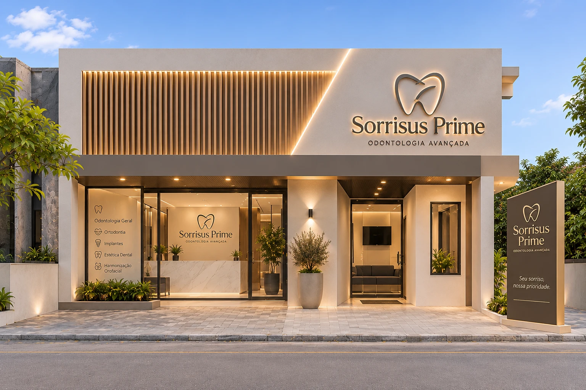
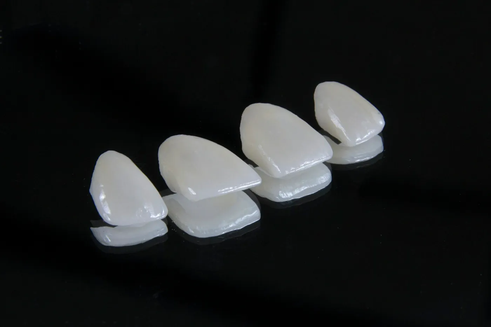
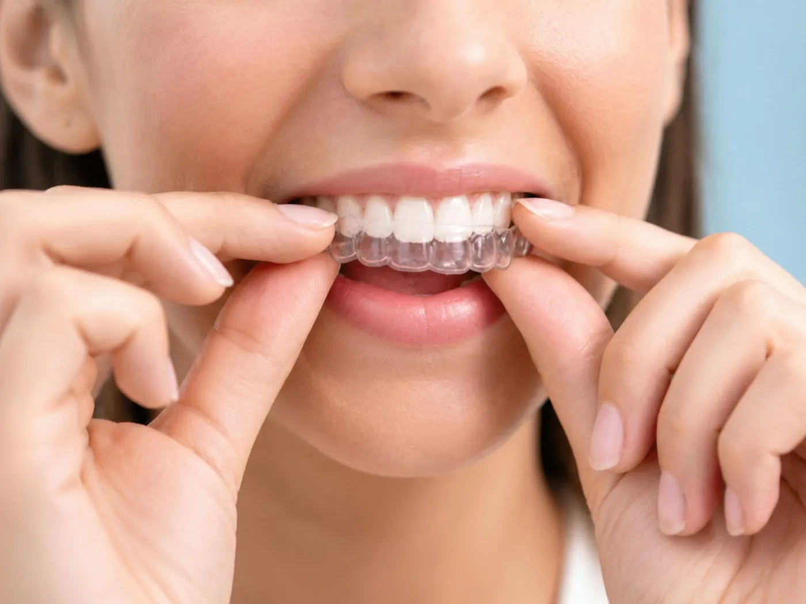
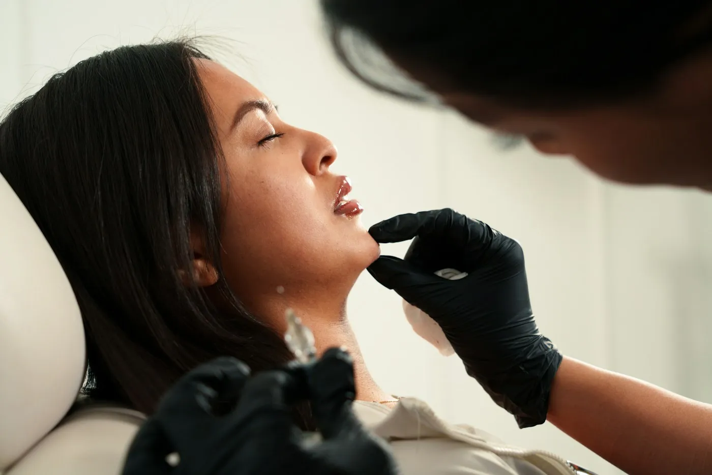
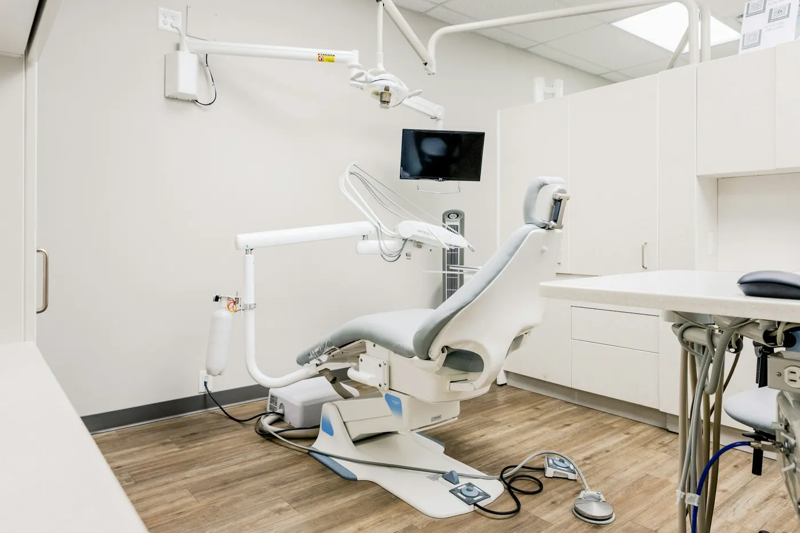
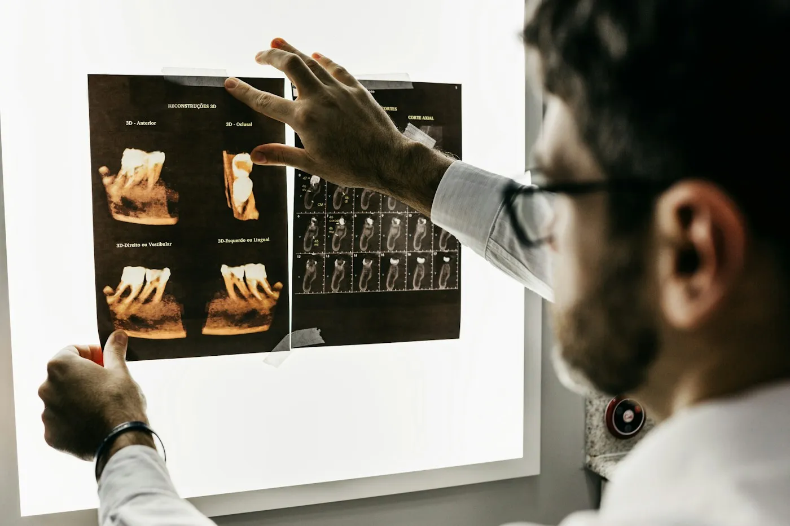
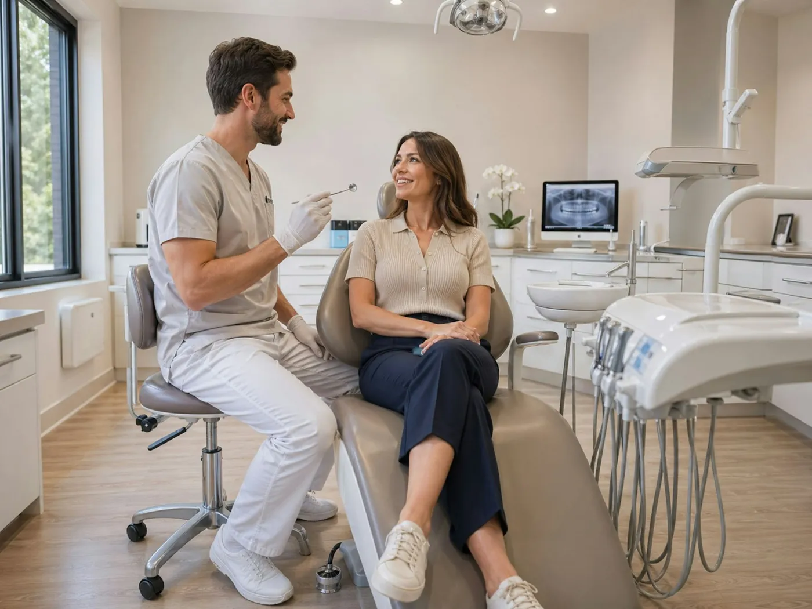

Implantes dentários
Raiz nova, firmeza de dente natural.
Cirurgia guiada a partir da tomografia, com o implante posicionado no milímetro planejado. Coroas em cerâmica feitas para a sua cor de dente.
Planejamento em uma consulta
Agendar avaliação
Sorrisus Prime, odontologia avançada nos Jardins
Planejamento digital, mãos experientes e uma casa pensada para você se sentir bem desde a porta.
Quem cuida do seu sorriso
Cirurgiã-dentista. Implantodontia e reabilitação oral estética.
Há mais de quinze anos a Dra. Marina devolve função e confiança a sorrisos que pareciam sem saída. Cada caso começa com escuta, passa por um planejamento digital completo e só depois chega à cadeira.
Um bom tratamento não se nota. A pessoa só volta a sorrir sem pensar nisso.
Casos unitários, protocolos fixos e enxertos, com cirurgia guiada por computador.
Lentes de contato dental, facetas e clareamento, desenhados junto com o paciente.
Professora convidada em cursos de atualização para dentistas.
Tratamentos
Sete frentes, um mesmo cuidado: diagnóstico completo, plano por escrito e nenhum procedimento sem a sua aprovação.
Raiz nova, firmeza de dente natural.
Cirurgia guiada a partir da tomografia, com o implante posicionado no milímetro planejado. Coroas em cerâmica feitas para a sua cor de dente.
Planejamento em uma consulta
Agendar avaliação
Finas como uma lente, desenhadas para o seu rosto.
Lâminas de porcelana que corrigem forma, cor e pequenos espaços com desgaste mínimo ou nenhum. O desenho é aprovado por você antes.
Ensaio do sorriso antes de decidir
Agendar avaliação
Mais claro, sem perder o natural.
Técnica de consultório, caseira ou a combinação das duas, com controle de sensibilidade em cada etapa.
De duas a quatro semanas
Agendar avaliação
Dentes no lugar, quase sem ninguém perceber.
Alinhadores transparentes e aparelhos estéticos, com simulação digital do movimento do primeiro ao último dia.
Simulação na primeira visita
Agendar avaliação
Equilíbrio entre sorriso e rosto.
Toxina botulínica, preenchimentos e bioestimuladores em doses moderadas, para quem quer parecer descansado e não diferente.
Avaliação facial completa
Agendar avaliaçãoPequenos ajustes, grande diferença.
Restaurações em resina, recontorno e gengivoplastia para alinhar proporções e deixar o sorriso inteiro em harmonia.
Muitas vezes em uma sessão
Agendar avaliação
O cuidado que mantém tudo de pé.
Limpeza, prevenção, tratamento de canal e restaurações, com a mesma atenção dada aos casos mais complexos.
Retorno a cada seis meses
Agendar avaliaçãoEstrutura e experiência
Arraste a página e percorra os ambientes da clínica.






Recepção sem balcão de fila: alguém vem até você com o seu nome.
Escuta, fotos, escaneamento e imagens. Sem pressa.
O plano aparece na tela, com etapas, prazos e valores por escrito.
Sessões marcadas no seu ritmo, com retorno combinado.
Depoimentos e resultados
Aqui só entram relatos reais, enviados pelos próprios pacientes e publicados com autorização por escrito. Enquanto eles não chegam, o espaço fica reservado.
[Relato do paciente, publicado com autorização por escrito]
[Relato do paciente, publicado com autorização por escrito]
[Relato do paciente, publicado com autorização por escrito]
Nota e número de avaliações do perfil da clínica: [preencher com o perfil real].
Ver no GoogleFotos de antes e depois aparecem somente com o termo de autorização assinado pelo paciente, seguindo o Código de Ética Odontológica. Nenhum resultado é garantido: cada caso responde de um jeito, e isso é explicado na avaliação.
Contato e agendamento
Conte o que você procura e escolha o melhor período. A recepção confirma o horário pelo WhatsApp.
| Segunda a sexta | 8h às 20h |
|---|---|
| Sábado | 8h às 13h |
| Domingo e feriados | Fechado |